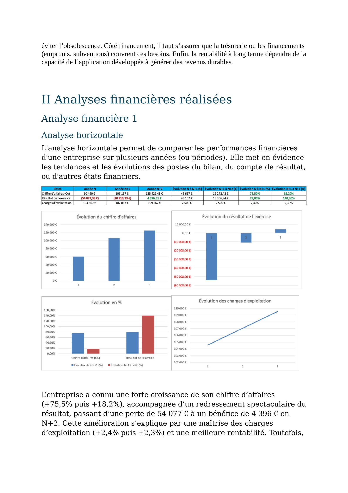
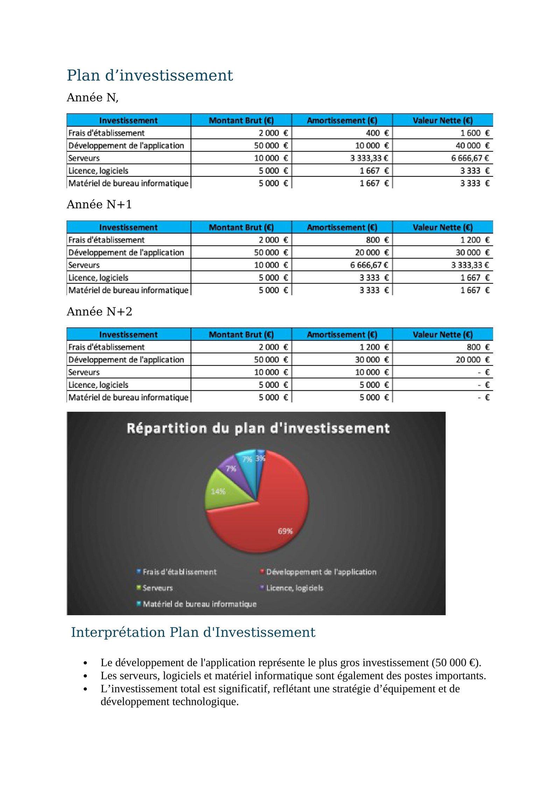
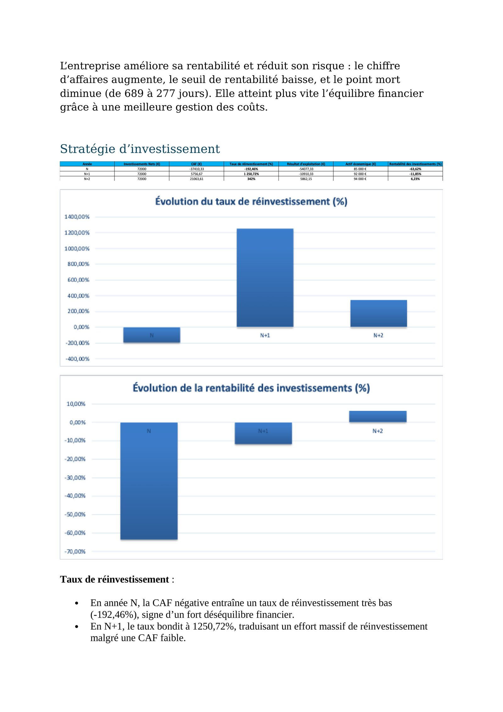
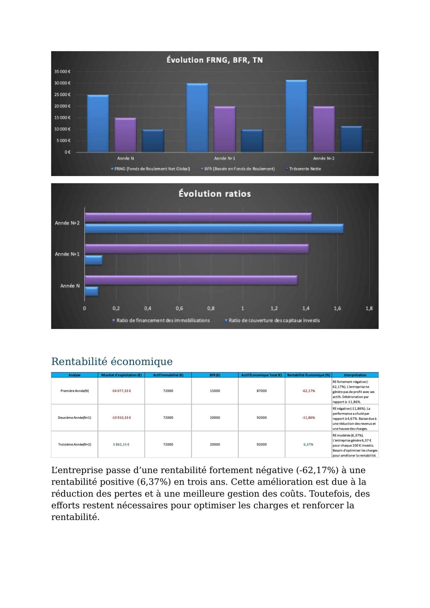
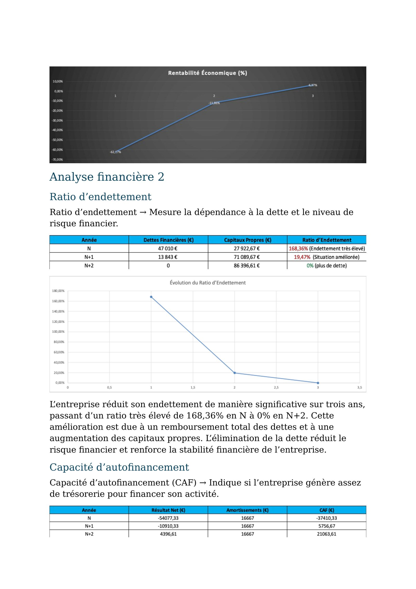
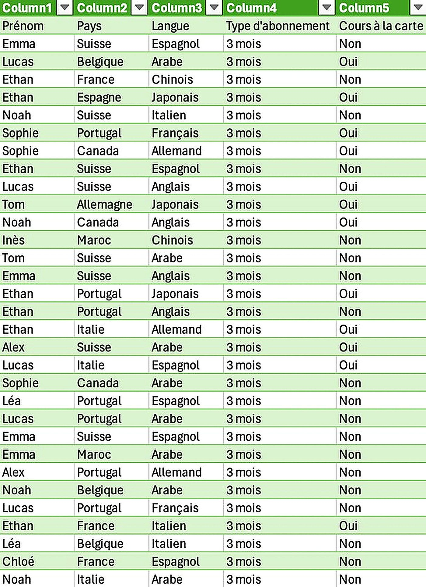
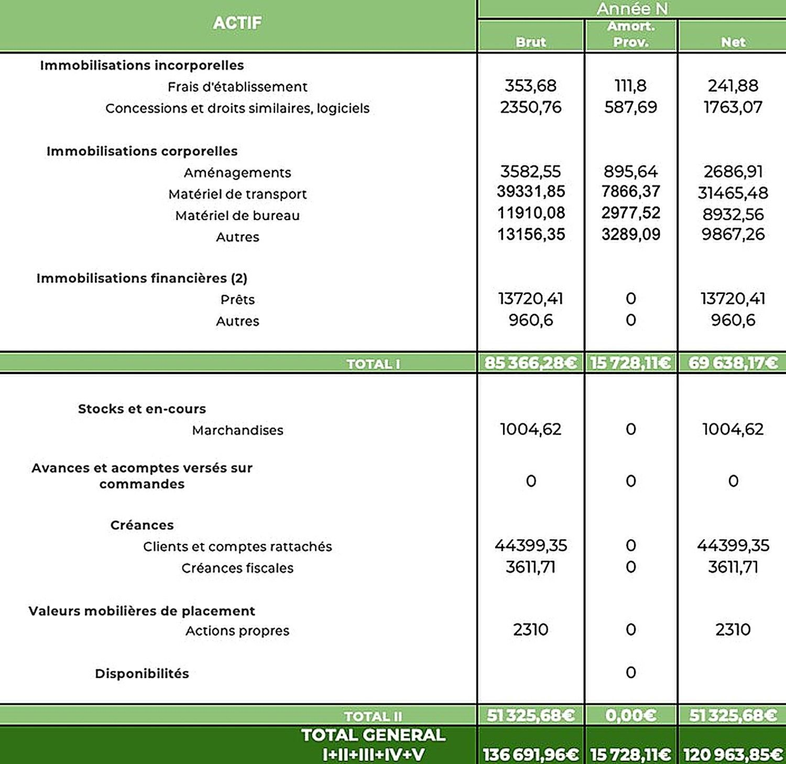
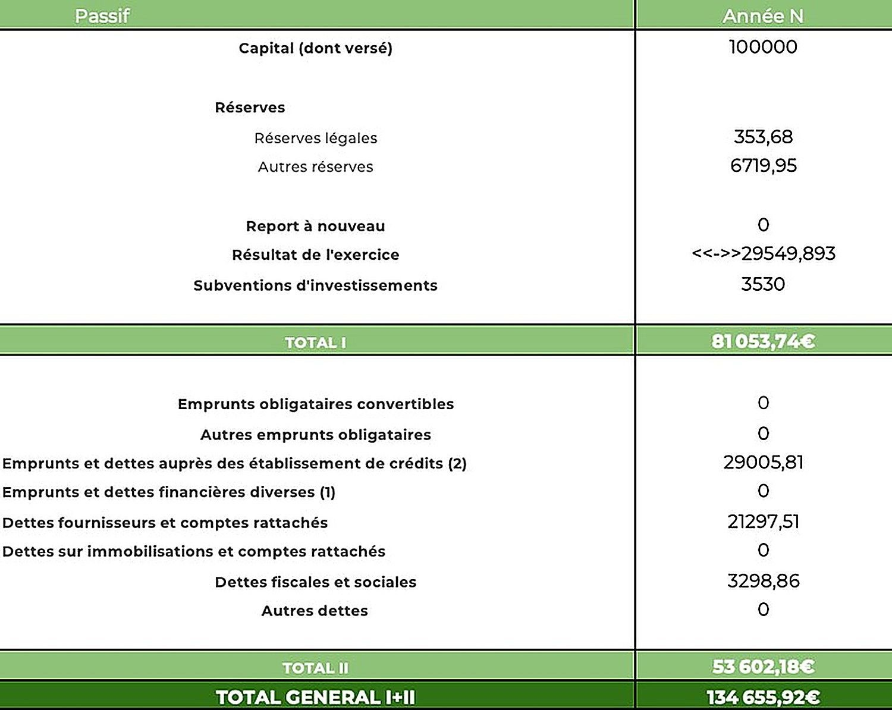

5ans de prévisionnel
1travail individuel
3exercices analysés en détail
Le contexte et la commande
- SAE S4.02 : démontrer seul la faisabilité financière d’un projet entrepreneurial sur cinq ans, sans appui d’équipe.
- Exercice de synthèse de la deuxième année : toutes les notions de gestion financière y sont mobilisées simultanément.
- Livrable attendu : un dossier financier complet, défendable devant un banquier.
La problématique
Démontrer la faisabilité d’un projet entrepreneurial en mobilisant l’analyse financière, la modélisation, la stratégie, la rentabilité et la gestion des risques.
La structure financière
- Bilan d’ouverture, compte de résultat et soldes intermédiaires de gestion sur trois ans.
- Plan d’investissement détaillé : développement de l’application, équipements techniques, ressources humaines.
- Plan de financement vérifiant l’équilibre entre fonds propres, endettement et amortissements.



Les analyses menées
- Analyse horizontale et verticale sur trois exercices.
- Ratios financiers : rentabilité économique, ROE, endettement, capacité d’autofinancement.
- Seuil de rentabilité, point mort, coût du capital (WACC) et retour sur investissement.
- Cash-flow libre, charges fixes et variables, analyse de sensibilité.



La projection
- Années N à N+2 : phases de lancement et de redressement.
- Années N+3 à N+5 : croissance maîtrisée, diversification des services et amélioration continue de la rentabilité.


Ce que j’ai produit
- Plan d’investissement et de financement, avec structure de capital et hypothèses justifiées.
- Comptes de résultat prévisionnels, bilans d’ouverture et de clôture sur trois exercices.
- Seuil de rentabilité calculé et suivi année par année.
- Analyse de l’équilibre financier : fonds de roulement net global, besoin en fonds de roulement et trésorerie nette.
- Ratios de structure et de rentabilité, retour sur investissement et coût moyen du capital.
Ce que j’en retire
- Lire un bilan et un compte de résultat comme un tout cohérent, pas comme des tableaux isolés.
- Justifier chaque hypothèse chiffrée plutôt que de la poser arbitrairement.
- Travailler en autonomie complète, avec la rigueur qu’exige un document financier.
Outils et méthodes mobilisés
ExcelSeuil de rentabilitéFRNG et BFRRatios financiersPlan de trésorerie